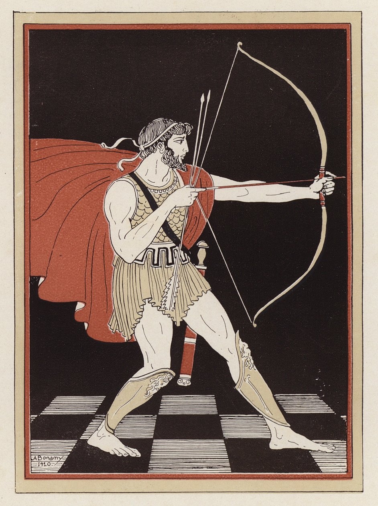
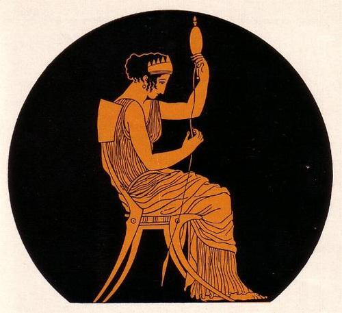
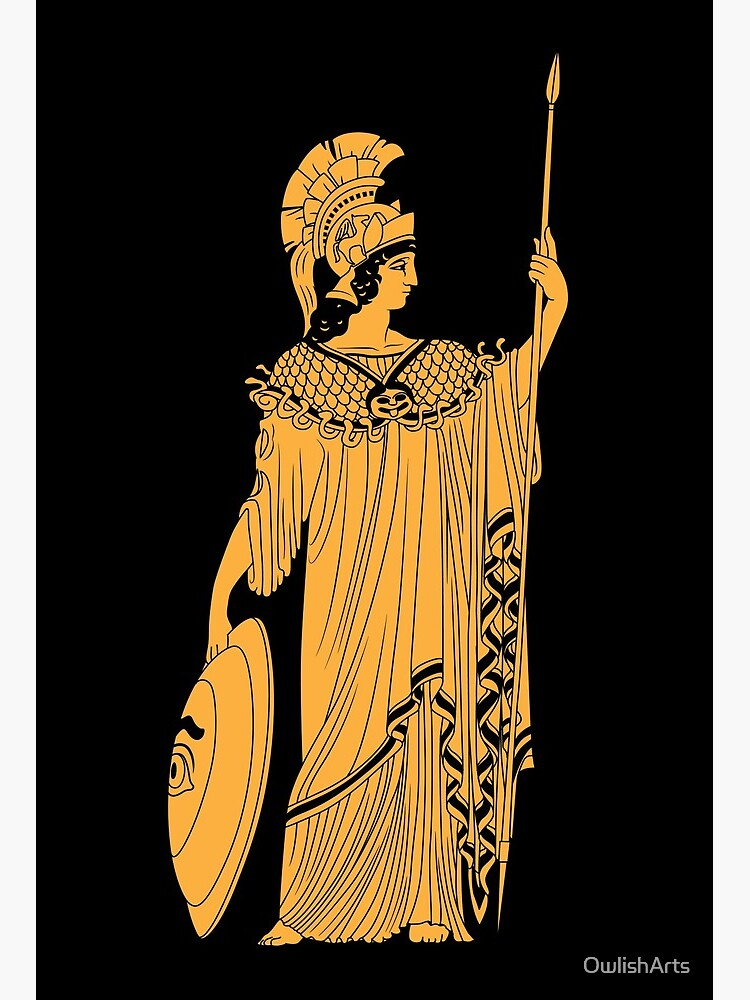
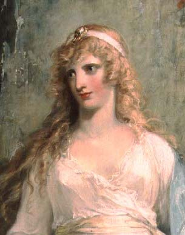
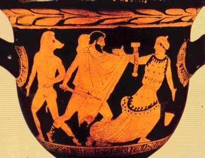

Odysseus has the defining character traits of a Homeric leader: strength, courage, nobility, a thirst for glory, and confidence in his authority. His most distinguishing trait, however, is his sharp intellect. Odysseus’s quick thinking helps him out of some very tough situations, as when he escapes from the cave of the Cyclops in Book 9, or when he hides his slaughter of the suitors by having his minstrel strike up a wedding tune in Book 23. He is also a convincing, articulate speaker and can win over or manipulate his audience with ease. When he first addresses Nausicaa on the island of Scheria, for example, his suave, comforting approach quickly wins her trust.
Like other Homeric heroes, Odysseus longs to win kleos (“glory” won through great deeds), but he also wishes to complete his nostos (“homecoming”). He enjoys his luxurious life with Calypso in an exotic land, but only to a point. Eventually, he wants to return home, even though he admits that his wife cannot compare with Calypso. He thinks of home throughout the time he spends with the Phaeacians and also while on Circe’s island. Sometimes his glory-seeking gets in the way of his home-seeking, however. He sacks the land of the Cicones but loses men and time in the process. He waits too long in the cave of Polyphemus, enjoying the free milk and cheese he finds, and is trapped there when the Cyclops returns.
Homeric characters are generally static. Though they may be very complex and realistic, they do not change over the course of the work as characters in modern novels and stories do. Odysseus and especially Telemachus break this rule. Early in his adventures, Odysseus’s love of glory prompts him to reveal his identity to the Cyclops and bring Poseidon’s wrath down on him. By the end of the epic, he seems much more willing to temper pride with patience. Disguised as a beggar, he does not immediately react to the abuse he receives from the suitors. Instead, he endures it until the traps he has set and the loyalties he has secured put him in a position from which he can strike back effectively.
Just an infant when his father left for Troy, Telemachus is still maturing when The Odyssey begins. He is wholly devoted to his mother and to maintaining his father’s estate, but he does not know how to protect them from the suitors. After all, it has only been a few years since he first realized what the suitors’ intentions were. His meeting with Athena in Book 1 changes things. Aside from improving his stature and bearing, she teaches him the responsibilities of a young prince. He soon becomes more assertive. He confronts the suitors and denounces the abuse of his estate, and when Penelope and Eurycleia become anxious or upset, he does not shy away from taking control.
Telemachus never fully matches his father’s talents, at least not by The Odyssey’s conclusion. He has a stout heart and an active mind, and sometimes even a bit of a temper, but he never schemes with the same skill or speaks with quite the same fluency as Odysseus. In Book 22, he accidentally leaves a weapons storeroom unlocked, a careless mistake that allows the suitors to arm themselves. While Odysseus does make a few mistakes in judgment over the course of the epic, it is difficult to imagine him making such an absentminded blunder. Telemachus has not yet inherited his father’s brassy pride either. The scene with the bow captures the endpoint of his development perfectly. He tries and tries to string it, and very nearly does, but not quite. This episode reminds us that, at the close of The Odyssey, Telemachus still cannot match his father’s skills but is well on his way.

Though she has not seen Odysseus in twenty years, and despite pressure the suitors place on her to remarry, Penelope never loses faith in her husband. Her cares make her somewhat flighty and excitable, however. For this reason, Odysseus, Telemachus, and Athena often prefer to leave her in the dark about matters rather than upset her. Athena must distract her, for instance, so that she does not discover Odysseus’s identity when Eurycleia is washing him. Athena often comes to her in dreams to reassure or comfort her, for Penelope would otherwise spend her nights weeping in her bed.
Though her love for Odysseus is unyielding, she responds to the suitors with some indecision. She never refuses to remarry outright. Instead, she puts off her decision and leads them on with promises that she will choose a new husband as soon as certain things happen. Her astute delaying tactics reveal her sly and artful side. The notion of not remarrying until she completes a burial shroud that she will never complete cleverly buys her time. Similarly, some commentators claim that her decision to marry whomever wins the archery contest of Book 21 results from her awareness that only her husband can win it. Some even claim that she recognizes her husband before she admits it to him in Book 2.
As goddess of wisdom and battle, Athena naturally has a soft spot for the brave and wily Odysseus. She helps him out of many tough situations, including his shipwreck in Book 5 and the mismatched battle of Book 22. She does not merely impart sense and safety to her passive charge, however. She takes an interest in Odysseus for the talents he already has and actively demonstrates. Although she reassures Odysseus during the battle with the suitors, she does not become fully involved, preferring instead to watch Odysseus fight and prevail on his own.
She also often helps Telemachus—as when she sends him off to Pylos and Sparta to earn a name for himself—but she has the most affection for Odysseus. Athena is confident, practical, clever, a master of disguises, and a great warrior, characteristics she finds reflected in Telemachus. Her role as goddess of the womanly arts gets very little attention in The Odyssey. Penelope works at the loom all the time but rarely sees Athena, and then usually only in dreams.
Calypso is an immortal goddess who holds Odysseus prisoner for seven years on the island where she lives and forces him to be her lover. Calypso loves Odysseus and wants to make him immortal so he can stay with her and be her husband forever, even though she understands that he doesn’t love her back and wants to return to Penelope. Throughout the poem Calypso is described as “lustrous Calypso” and “the nymph with lovely braids.” In addition to being powerful, Calypso is smart and insightful. When Zeus orders Calypso to release Odysseus, she complains about the gods’ double standard which allows male deities to take human lovers but punishes goddesses who do the same: “You unrivalled lords of jealousy—/scandalized when goddesses sleep with mortals.” Calypso’s speech draws our attention to the similar double standard which exists in the mortal world of the poem. Neither the poet nor any of the poem’s characters rebuke Odysseus for sleeping with Calypso and Circe, but Penelope is repeatedly criticized for allowing the suitors to remain in her house, even though she has little or no power to expel them.
Circe is an immortal goddess who seeks to prevent Odysseus from returning home. Also like Calypso, Circe is described as “lustrous” and “the nymph with the lovely braids,” and is first seen weaving at her loom. Circe has magic powers, which she uses to turn some of Odysseus’s men into pigs. When Odysseus resists her magic with the help of the god Hermes, Circe invites him into her bed, then bathes him, feeds him, and releases his men from the spell she’s cast on them. Odysseus describes Circe’s home as overflowing with abundant food and luxury: “handmaids bustled through the halls[…]One draped the chairs with fine crimson covers[…]A third mulled heady, heart-warming wine[…]she eased me into a tub and bathed me.” In Circe’s home, Odysseus loses sight of the goal of returning to Ithaca, and he happily spends a year enjoying her hospitality, until his men remind him of their mission. Because Circe succeeds in distracting Odysseus from his quest, she can be seen as representing the dangers of excess comfort and pleasure. Once she agrees not to play any more tricks on Odysseus and his men, Circe turns out to be the ideal host – in fact, too ideal for any guest who wants to eventually leave.
